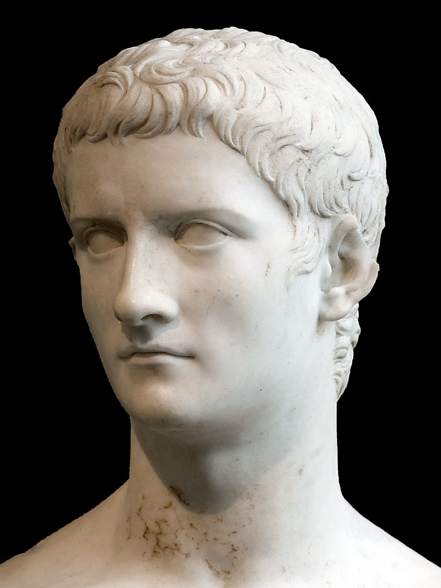
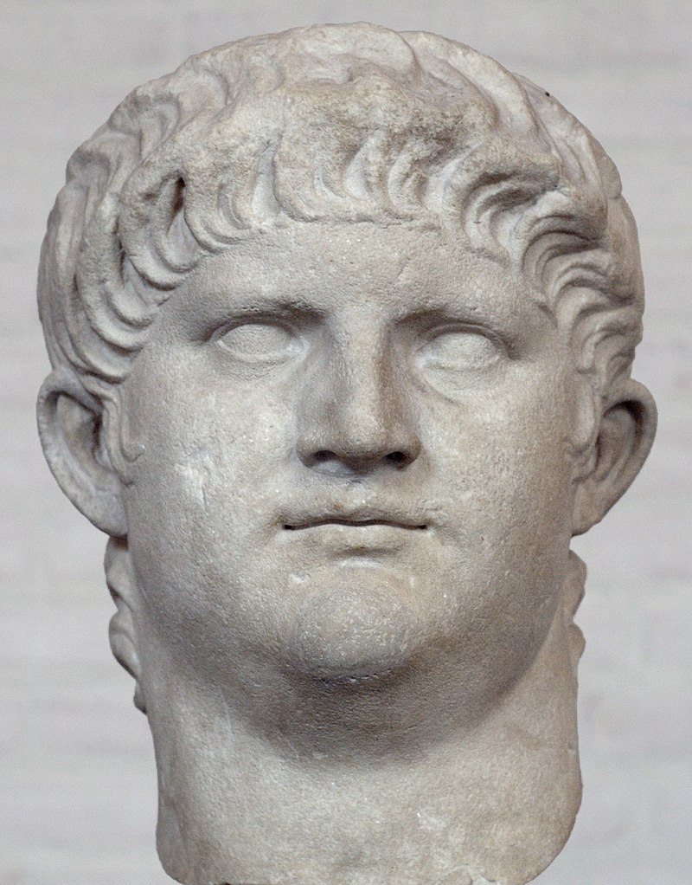

Roman Empire
Basic Info
A period of unrest and civil wars in the 1st century BCE marked the transition of Rome from a republic to an empire. This period encompassed the career of Julius Caesar, who eventually took full power over Rome as its dictator. After his assassination in 44 BCE, the triumvirate of Mark Antony, Lepidus, and Octavian, Caesar’s nephew, ruled. It was not long before Octavian went to war against Antony in northern Africa, and after his victory at Actium (31 BCE) he was crowned Rome’s first emperor, Augustus. His reign, from 27 BCE to 14 CE, was distinguished by stability and peace. Augustus established a form of government known as a principate, which combined some elements from the republic with the traditional powers of a monarchy. The Senate still functioned, though Augustus, as princeps, or first citizen, remained in control of the government. With a mind toward maintaining the structure of power entrusted to his rule, Augustus began thinking early about who should follow him. Death played havoc with his attempts to select his successor. He had no son and his nephew Marcellus, his son-in-law Agrippa, and his grandsons Gaius and Lucius each predeceased him. He eventually chose Tiberius, a scion of the ultra-aristocratic Claudia gens, and in 4 CE adopted him as his son.

Emporers
gblist of the notable emporers:
- Octavian/Augustus Ceasar
- Tiberius
- Caligula 
- Claudius
- Nero 